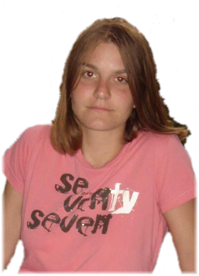
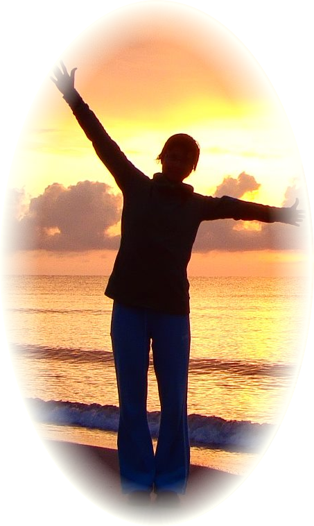
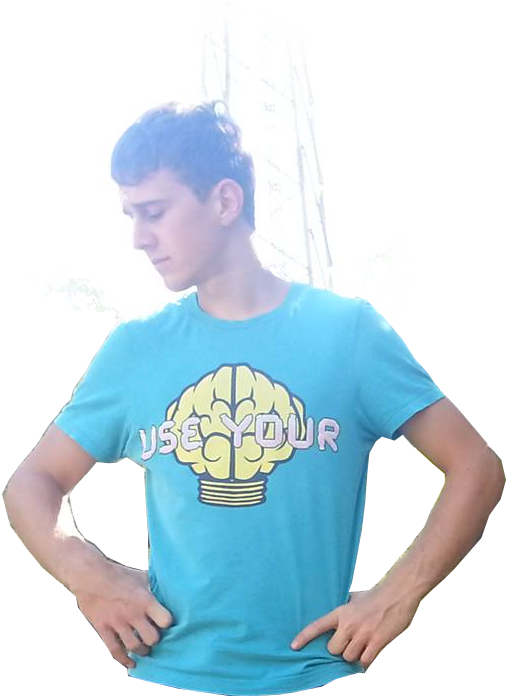
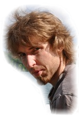

V skupini smo bili štirje člani vsi študentje prve stopnje Fizike na Fakulteti za matematiko in fiziko. Ženski del ekipe je iz tretjega letnika, četrti član, blažen med ženami, pa še letnik zadaj.
Anja Dobravec je bila vodja ekipe. Poskrbela je, da smo pridno delali, kar smo morali, pisala zapiske in prevzemala odgovornost za ekipo. Tudi sicer se je vrgla v delo kot bi bila čisto navadna članica ekipe.
Stella Foršček* je bila desna roka velike in vsemogočne voditeljice in je opravljala njene dolžnosti, ko sama ni mogla. Vedno je imela pod kontrolo naša orodja, pripomočke in poskrbela, da se nobena luža staljenega voska ni izognila njenim prstom.
Katja Mihorko* je marljivo delala in vedno sodelovala tako pri teoretičnih razpravah, kot tudi pri opravljanju dejanskih praktičnih poskusov. Vedno dobre volje in zagnana za delo je gnala naše raziskave naprej.
Maks Kolman* je bil bolj elektronsko obarvan član ekipe. Poskrbel je za kodiranje spletne strani (ki jo ravnokar berete) in bil dežurni fotograf, kljub pomanjkanju znanja o fotografiji.
Asist. Mihael Gojkošek, prof. fiz., je bil naš mentor. Tisti, ki nam je priskrbel vse potrbne pripomočke, nam pomagal pri razvoju teoretične podlage in dal kakšen namig za zasnovo poskusov.